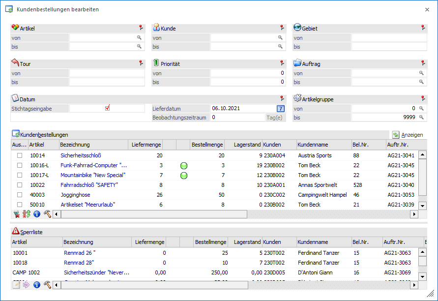
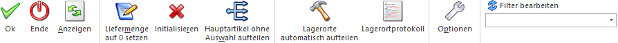

In dem Programmbereich "Kundenbestellungen bearbeiten", welcher über den Menüpunkt…
1 WinLine FAKT
1 Erfassen
1 Kundenbestellungen
1 Kundenbestellungen bearbeiten
… geöffnet werden kann, können alle gedruckten Auftragsbestätigungen, die noch nicht ausgeliefert sind, bearbeitet werden. Dabei wird der vorhandene Lagerstand der Artikel solange aufgeteilt, bis entweder der Lagerstand 0 ist oder alle Kundenbestellungen erfüllt sind.
Achtung
Kundenbestellungen, bei welchen das Personenkonto auf inaktiv gesetzt wurde, werden in "Kundenbestellungen bearbeiten" nicht berücksichtigt.

Das Programm "Kundenbestellungen bearbeiten" ist in die folgenden Bereiche untergliedert, welche in den nachfolgenden Kapiteln beschrieben werden:
ü Optionen
ü Tabelle "Kundenbestellungen"
Zusätzlich werden in dem Kapitel Exkurs - Kundenbestellungen bearbeiten weitere Sonderfunktionen detailliert erläutert.
Buttons

Ø Ok
Durch Drücken des Buttons "OK" bzw. der Taste F5 werden die Liefermengen und mögliche Ersatzartikel in die Aufträge zurückgeschrieben. Die dadurch vorbereiteten Daten können anschließend in folgenden Programmen weiterbearbeitet werden:
ü Packliste drucken (Erfassen - Kundenbestellungen - Packliste drucken)
ü Kommissionierung (Erfassen - Kundenbestellungen - Kommissionierung)
ü Kundenlieferscheine drucken (Erfassen - Kundenbestellungen - Kundenlieferscheine drucken)
Hinweis
Führen zwei Benutzer das "Kundenbestellungen bearbeiten" mit den gleichen Einschränkungen durch, so werden die Liefermengen jeweils aktualisiert (d.h. in die Aufträge als "bereits gelieferte Menge" zurückgeschrieben), wodurch der letzte Eintrag "gewinnt".
Sollten in der Zwischenzeit allerdings schon die entsprechenden Lieferscheine gedruckt worden sein (vorausgesetzt es wurden vom ersten Benutzer die Mengen verändert), werden die Mengen NICHT in die Aufträge zurückgeschrieben und der zweite Benutzer erhält beim Abspeichern eine Hinweismeldung, sowie ein Fehlerprotokoll.
Ø Ende
Durch Drücken des "Ende"-Buttons bzw. der Taste ESC werden alle vorgenommenen Liefermengeneingaben verworfen und das Fenster geschlossen.
Hinweis
Vorgenommene Initialisierungen oder Hauptartikelaufteilungen werden direkt in die Aufträge zurückgeschrieben und bleiben somit erhalten.
Ø Anzeigen
Durch das Anklicken des Buttons "Anzeigen" werden die Tabellen "Kundenbestellungen" und "Sperrliste" anhand der vorgenommenen Selektion befüllt.
Ø Liefermenge auf 0 setzen
Wird dieser Button gedrückt, so werden für alle Artikel in der Tabelle " Kundenbestellungen", bei denen die Option "Auswahl" aktiviert wurde, die Liefermengen auf 0 gesetzt. Auf diesem Wege können Positionen, für welche noch keine Kundenlieferscheine gedruckt werden sollen (z.B. Positionen für die eine Teillieferung durchgeführt werden könnte, aber aus organisatorischen Gründen diesmal keine Teillieferung erfolgen soll), aus der Selektion herausgenommen werden.
Ø Initialisieren
Durch Drücken des "Initialisieren"-Buttons werden die gespeicherten Liefermengen der Artikelzeilen wieder auf 0 gesetzt.
Achtung
Es werden alle Auftragszeilen berücksichtigt, die der aktuellen Selektion entsprechen. Hierbei ist es irrelevant, ob zuvor der Button "Anzeigen" betätigt wurde. Des Weiteren wird nicht berücksichtigt, ob für die Belegzeilen bereits Packlisten gedruckt oder diese in der Kommissionierung verpackt wurden.
Handelt es sich bei den Auftragszeilen um Artikel mit einer Lagerortstruktur, muss vor der Initialisierung der Button "Anzeigen" gedrückt werden.
Beispiel
Es liegen folgende Kundenbestellungen vor, wobei der Lagerstand des Artikels 4711 aktuell 13 Stk. beträgt:
ü Auftrag für Kunde A mit Artikel 4711 über 10 Stück
ü Auftrag für Kunde B mit Artikel 4711 über 5 Stück
D.h. werden diese Aufträge in "Kundenbestellungen bearbeiten" bestätigt, werden für den Auftrag des Kunden A "10 Stück" und für den Auftrag des Kunden B "3 Stück" festgeschrieben.
ü Szenario 1
Der Auftrag des
Kunden A wird storniert. Wird nun der Auftrag des Kunden B im Belegerfassen in
der Stufe Lieferschein aufgerufen, werden nur 3 Stück als Liefermenge
vorgeschlagen (obwohl jetzt genug auf Lager wären).
ü Szenario 2
Beide Aufträge
werden in "Kundenbestellungen bearbeiten" aufgerufen und die Liefermenge via
Button "Initialisieren" auf 0 gesetzt. Anschließend wird der Auftrag des Kunden
A storniert.
Wird nun der Auftrag des Kunden B im Belegerfassen in der Stufe
Lieferschein aufgerufen, wird die Liefermenge aus "Menge bestellt" (= 5)
abzüglich "Menge bereits geliefert" (= 0) berechnet, so dass 5 Stück zur
Auslieferung vorgeschlagen werden.
Ø Hauptartikel ohne Auswahl aufteilen
Bei der Anwahl dieses Buttons werden Zeilen des Typs "Hauptartikel mit Ausprägung und ohne Aufteilung", bei denen eine Liefermenge größer "0" hinterlegt ist, anhand des Lagerstands der Ausprägungen automatisch aufgeteilt. Hierbei wird die Option "Mehrfachausprägung" aus dem Artikelstamm berücksichtigt.
Nach erfolgter Ausprägung wird in "Kundenbestellungen bearbeiten" nur noch die gewählte Ausprägung und nicht mehr der Hauptartikel angezeigt.
Achtung
Im Gegensatz zu Liefermengeneingaben wird eine durchgeführte Ausprägung direkt abgespeichert und in den zugrundeliegenden Auftrag zurückgeschrieben. Sollte eine falsche Ausprägung gewählt worden sein, muss dies im Auftrag korrigiert werden.
Ø Lagerorte automatisch aufteilen
Durch Anwahl des Buttons "Lagerorte automatisch aufteilen" wird, mit Ausnahme von Stücklistenkomponenten, bei allen Artikeln mit Lagerortstruktur eine automatische Aufteilung bzw. Zuweisung auf Lagerorte durchgeführt.
Hinweis
Bereits getätigte / vorhandene Lagerorterfassungen werden hierbei initialisiert und neu aufgeteilt.
Ø Lagerortprotokoll
Mit Hilfe des Buttons "Lagerortprotokoll" kann ein Protokoll über die aktuellen Lagerorterfassungen am Bildschirm ausgegeben werden.
Hinweis
Die Ausgabe des Protokolls kann im Optionsbereich (siehe Button "Optionen") individualisiert werden.
Ø Optionen
Mit Hilfe dieses Buttons wird der Bereich Optionen geöffnet, in dem das Programmverhalten individualisiert werden kann.
Ø Filter bearbeiten
Mit dem Filter können noch detailliertere Einschränkungen auf die Daten vorgenommen werden (nähere Informationen hierzu im Handbuch "WinLine Allgemein").